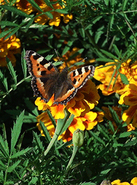
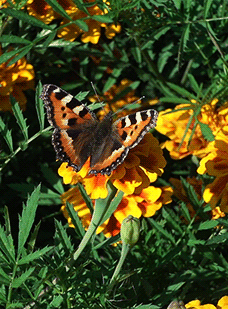

¿Cuáles fueron las primeras formas de vida en la Tierra?
La vida en la tierra surgió hace unos 3.500 millones de años. Se inició así un proceso evolutivo de animales y plantas del que tenemos pocos datos, pues las primeras formas de vida eran microscópicas y luego animales y plantas blandos (algas, gusanos) que no dejan restos fósiles. Esas formas de vida dieron paso a lo son ahora las formas de vida que conocemos.
¿Cómo se clasifican los animales terrestres?
Clasificacion de animales segun su habitat
Considerando entonces que el hábitat es el lugar específico donde vive una especie, podemos establecer la siguiente clasificación general: Aeroterrestres. Terrestres. Acuáticos.Clasificación de los animales
Animales vertebrados. Animales Invertebrados. Animales herbívoros. Animales omnívoros. Animales carnívorosClasificacion de los animales segun su nacimiento
Los animales, según su nacimiento, pueden clasificarse en vivíparos u ovíparos. Los animales vivíparos nacen del vientre de su madre. Los animales ovíparos nacen de un huevo que pone su madre¿Qué es un ecosistema?
El ecosistema es el conjunto de especies de un área determinada que interactúan entre ellas y con su ambiente abiótico; mediante procesos como la depredación, el parasitismo, la competencia y la simbiosis, y con su ambiente al desintegrarse y volver a ser parte del ciclo de energía y de nutrientes.
Tipos de ecosistema
Hay ocho grandes ecosistemas (o biomas) en el mundo. Estos son el bosque templado, el bosque lluvioso tropical, el desierto, la pradera, la tundra, la taiga, el chaparral y el océano.¿Cuáles son los ecosistemas que están en peligro?
- Los ecosistemas más amenazados del mundo son:
- Manantiales kársticos (Australia).
- Mar de Aral (Uzbekistán-Kazajistán).
- Bosques de Acacias (Senegal, Malí y Mauritania).
- Fynbos (Sudáfrica).
- Coorong (Australia).
- Ecosistema de pantanos costeros (Australia).
- Humedales en el río Murray (Australia).
- Bosques de algas gigantes (Alaska).
¿Por qué los ecosistemas están en peligro?
La pérdida y deterioro de los hábitats es la principal causa de pérdida de biodiversidad. Al transformar selvas, bosques, matorrales, pastizales, manglares, lagunas, y arrecifes en campos agrícolas, ganaderos, granjas camaroneras, presas, carreteras y zonas urbanas destruimos el hábitat de miles de especies.
¿Cómo podemos proteger los ecosistemas en peligro?
- Cultiva tus propios alimentos.
- Planta árboles.
- Ahorrar agua.
- Separa la basura.
- Reutiliza todo lo que puedas.
- Conecta con la naturaleza y se sensible con ella.